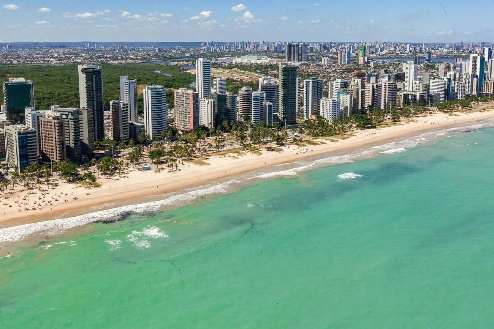

Praias Lindas para Conhecer
Praia da Boa Viagem

A praia também é ótima para a prática de esportes, e por isso você vai ver várias pessoas caminhando na areia ou se divertindo no futevôlei.
Porém, se você deseja mergulhar ou surfar, a praia não é ideal para esse tipo de atividade devido aos ataques de tubarão.
Ainda assim, é possível aproveitar as águas mornas e esverdeadas de Boa Viagem, basta esperar a maré baixa.
Durante esse período, piscinas naturais se formam na faixa de areia e você pode aproveitar para se banhar.
Praia do Pina
Ao lado da Praia de Boa Viagem, a Praia do Pina também faz sucesso entre os turistas e moradores locais.
Com uma faixa de areia ampla e a paisagem repleta de coqueiros, o destino conquista por sua tranquilidade e visual.
É inclusive uma das melhores praias de Recife para curtir o pôr do sol.